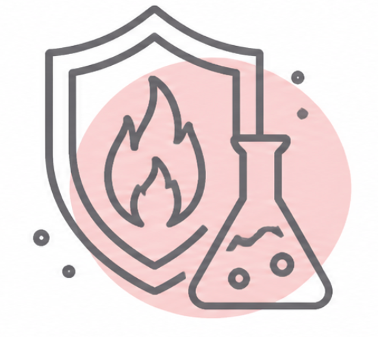
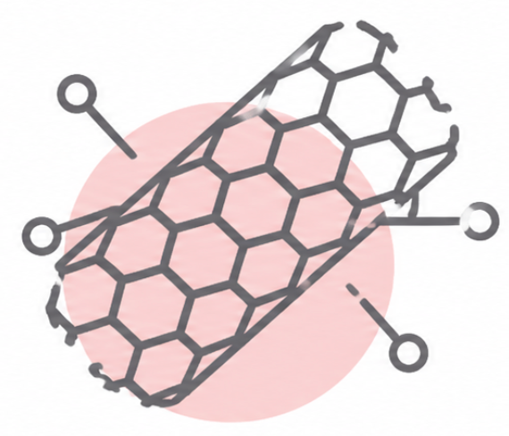

發展核心

阻燃劑開發
● UTFR-NAL 阻燃協效劑(無銻)
● UTFR-POC-260R 無鹵阻燃劑

VGCF 碳管
採用浮動式氣相成長法與高溫石墨化處理，提供超高純度與極佳電化學活性，專為鋰電池與精密電子產業設計。
產品規格
專業阻燃方案
UTFR-NAL (無銻協效劑)
- 替代三氧化二銻，阻燃效力高
- 鹵素阻燃劑最佳搭配
- 耐溫性：適用加工溫度 < 250℃
- UL 無銻認證首選方案
UTFR-POC-260R (無鹵)
- 磷酸鹽類 / 磷氮型複合配方
- 高性價比、滿足市場主流需求
- 耐溫性：適用加工溫度 < 230℃
- 符合現代環保與無鹵法規趨勢
VGCF 物理性質參數表
| 項目 | 規格參數 |
|---|---|
| 微結構 | 洋蔥式多管壁 (Multi-walled) |
| 直徑/管徑 | 7 微米 / 110 奈米 |
| 長徑比 | 10 ~ 500 |
| 導熱係數 (K) | ＞ 1600 W/m-k |
| 導電係數 (ρ) | 6 × 10⁻⁷ Ω.m |
| 石墨化程度 | ＞ 80% |
| 耐熱氧化溫度 | ＞ 700℃ |
關於日將
日將事業有限公司成立於 1995 年 1 月。從早期代理化學分析儀器開始，隨後跨足化工環保設備，現已發展為專注於高品質化學材料開發的專業廠商。
化學材料領域如浩瀚海洋般深邃廣闊，我們深知在無止盡的技術追求中，「高性價比」才是市場的主流與企業的生存之道。
針對 PVC 等材料，我們開發出的 NAL 環保材質 已成為業界取代三氧化二銻的領先材料，目前主要客戶為電線電纜業、橡膠業與ABS塑膠。